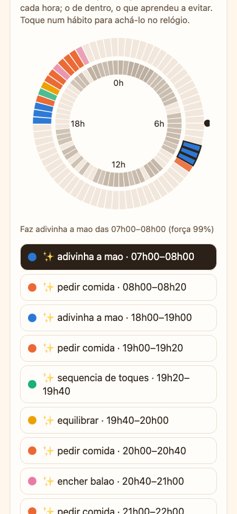
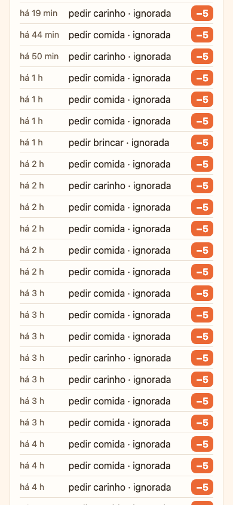

O ciclo de um segundo
Uma vez por segundo, o cérebro faz sempre a mesma volta. Todo o resto desta página detalha uma das setas abaixo.
- Sentir: o que a placa lê vira probabilidades de spike nos 107 neurônios de entrada.
- Pensar: a rede roda 20 passos de 50 ms (1 segundo de "pensamento").
- Agir: entre as ações permitidas agora, vence a que mais disparou.
- Aprender: o que você faz depois vira uma recompensa R, que mexe nos pesos.
Sentidos viram spikes
Neurônios de spike só entendem "disparou" ou "não disparou". Então cada número do mundo (a hora, a bateria, a fome) é espalhado por um grupinho de neurônios, cada um com o seu valor preferido ck. Quanto mais perto o valor está do preferido, mais forte a ativação, numa curva em forma de tenda:
A cada passo de 50 ms, cada neurônio sorteia se dispara. A chance máxima é 50%:
Eventos rápidos (um toque, uma sacudida, um barulho) não usam sorteio: o neurônio do evento dispara uma rajada de 3 spikes seguidos.
A hora usa 8 neurônios em círculo, um a cada 3 h (0h, 3h, 6h… 21h), então Δ = 180 min. Às 19h40 (1180 min), o neurônio das 18h (1080) fica a 100 min: a = 255 · 80/180 = 113. O das 21h (1260) fica a 80 min: a = 255 · 100/180 = 141. Os outros seis ficam em zero. Por isso a hora "acende" sempre dois vizinhos, e a rede sente o tempo andando.
| Grupo | Neurônios | Como codifica |
|---|---|---|
| Hora do dia | 8 | tenda circular, um a cada 3 h |
| Toque (onde, tipo, frequência, tempo sem toque) | 18 | rajadas e tenda (tempo sem toque em escala log₂) |
| Movimento, orientação, som | 14 | rajadas (sacudida, barulho) e tenda (volume) |
| As 7 vontades | 28 | 4 neurônios por vontade, tenda |
| Última ação e resposta do dono | 11 | bits e rajadas |
| Luz, dia, bateria, outra Capi, novidade | 21 | liga/desliga e tenda |
| Clima e temperatura | 7 | sol, nublado, chuva, tempestade; frio a calor |
O neurônio LIF
LIF quer dizer leaky integrate-and-fire: o neurônio integra a corrente que chega, vaza um pouco a cada passo e, quando o potencial passa do limiar, dispara. Na Capi, cada passo é assim:
O vazamento de 1/16 vira um deslocamento de bits (v >> 4), que é quase de graça no processador. O ruído é sorteado entre −30 e +30 de uma tabela de 1024 valores; quando a Capi já tem afeto acima de 60, ele cai para ±15 e ela fica mais previsível, como um bichinho adulto.
A corrente que chega em cada camada:
O último termo é a inibição lateral: cada ação que dispara empurra as outras para baixo. É o que faz uma ação ganhar em vez de todas dispararem juntas. O direto é a corrente que vem do relógio de hábitos e das vontades (seções 6 e 8).
Mesma conta da placa, em inteiros, com limiar 1000. Mude a corrente e veja quantas vezes ele dispara em 1 segundo (20 passos). A ação precisa de pelo menos 4 spikes na janela para poder vencer.
A cada 100 passos, cada neurônio oculto confere quanto disparou. Se disparou em mais de 30% dos passos, o limiar sobe 2%; se disparou em menos de 1%, desce 2%; fica sempre entre 500 e 4000. Isso é homeostase: nenhum neurônio fica gritando o tempo todo nem dorme para sempre.
Como ela decide
Uma decisão é uma janela de 20 passos (1 segundo). No fim, conta-se quantos spikes cada uma das 100 ações deu:
"Permitida" é uma máscara: a ação precisa ter passado o tempo de descanso dela, a pré-condição precisa valer (só pede comida com fome, só dá bom dia de manhã…) e, com energia abaixo de 40, as ações cansativas ficam bloqueadas. Uma ação que começou fica até terminar a duração dela; enquanto isso a rede não decide de novo, a não ser que aconteça algo forte (toque, sacudida, comida).
Por cima da rede há poucas regras fixas, como reflexos:
- energia abaixo de 20 → dorme, sem perguntar à rede; dorme até a energia passar de 90;
- fome acima de 80 → corrente fixa de 500 em "pedir comida";
- estresse acima de 80 → corrente fixa de 500 em "esconder o rosto";
- afeto abaixo de 20 → +1000 em "pedir carinho" (solidão: é isso que a faz explorar até descobrir a sua hora).
STDP: aprender sozinha o que anda junto
Entre os sentidos e os ocultos, ninguém dá nota: a rede só observa o que acontece junto. A regra é a STDP (spike-timing-dependent plasticity): se a entrada dispara logo antes do oculto, ela provavelmente ajudou, e a ligação fica mais forte. Se dispara logo depois, não ajudou, e fica mais fraca.
Cada spike deixa um rastro que apaga 1/16 por passo, e some depois de 16 passos (0,8 s):
Os pesos ficam guardados multiplicados por 16 (0 a 4080), para que passos pequenos não virem zero na divisão inteira. E o fator (Wmáx − w) faz o peso crescer cada vez mais devagar perto do topo, enquanto o fator w faz ele cair cada vez mais devagar perto de zero. Com passos inteiros fixos, como no projeto original, a depressão vencia e em 10 minutos todos os ocultos calavam.
A cada 100 passos, a soma das entradas de cada oculto é normalizada de volta à soma com que ele nasceu:
Assim, ganhar força numa entrada significa perder em outra. Cada oculto vira especialista numa combinação de sentidos (por exemplo, "noite + sem toque há muito tempo").
Recompensa e elegibilidade (R-STDP)
Entre os ocultos e as ações, o aprendizado precisa de nota: foi bom ou ruim? Só que a nota chega depois. Você dá a estrela um ou dois segundos depois da dancinha. A solução é o rastro de elegibilidade e: cada sinapse guarda "eu ajudei a última ação disparar".
Quando chega uma recompensa R, ela vira mudança de peso, só na coluna da ação que recebeu o crédito:
A taxa η é 4 nos primeiros 7 dias (filhote aprende rápido) e 2 depois. As ações de comer, dormir e as sociais têm um piso de 5, para nunca serem esquecidas por completo.
A Capi adulta (η = 2) dançou, e um oculto que disparou junto deixou e = 300 na sinapse dele com "dancinha". Você segura o dedo nela: R = +20. A mudança é 2 · 20 · 300 / 1024 = 11,7, que vira +11 em inteiros. Dez estrelas parecidas somam uns +110 numa escala de 0 a 255: a dancinha passa a disparar com muito mais facilidade naquele contexto.
"Ignorado" só é decidido 60 segundos depois de um pedido, mas a elegibilidade some em 10 a 15 segundos. Para isso existe a marca: quando um pedido começa, a rede anota quais ocultos estavam ativos. Se ele for ignorado, esses ocultos levam o castigo direto: Δw = η · R / 4. Sem a marca, a Capi nunca aprendia a parar de pedir: eram 9 pedidos por hora às 3 da manhã.
O relógio de hábitos
A camada oculta é boa para "o que está acontecendo", mas ruim para "que horas são": 8 neurônios de 3 em 3 horas não separam 19h de 17h. Por isso, ao lado da rede, existe uma tabela de 72 células de 20 minutos × 100 ações. Cada célula manda corrente direto nas ações, interpolando com a vizinha:
E aprende com cada recompensa, creditando o minuto em que a ação começou (assim até a bronca atrasada cai na hora certa):
Uma Capi filhote (η = 4) pede carinho às 19h00 em ponto e você faz carinho logo em seguida: R = +10 (antes dos ajustes de afeto e habituação). A célula das 19h00 ganha 4 · 10 · 24 = 960 na ação "pedir carinho". Uma corrente de 960 por passo, perto do limiar de 1000, quase sozinha já faz a ação disparar. Prêmio pesa 3 vezes mais que castigo (24 contra 8): um carinho na hora certa vale mais que um pedido ignorado.


A tabela de recompensas
Tudo o que você faz vira um número. A maioria só vale se acontecer até 3 segundos depois de a ação começar: é assim que a recompensa acha a ação certa.
| O que aconteceu | R | Quando vale |
|---|---|---|
| ⭐ Estrela (segurar o dedo parado nela) | +20 | até 3 s depois do início da ação |
| Comida quando ela pediu comida | +15 × (1 + fome/100) | durante o pedido |
| Jogo até o fim | +12 | sempre (+5 se repetir) |
| Carinho (toque rápido nela) | +10 × (1 + afeto/100) | até 3 s depois |
| Atender um chamado | +8 | até 10 s depois do chamado |
| Tocar nela enquanto está quieta | −2 | ela queria ficar em paz |
| Fazer som (custo de qualquer som) | −(3 + n) | no início, n = vezes recentes |
| Pedido ignorado | −5 | 60 s sem resposta |
| Som sem resposta | −6 | 30 s sem resposta |
| Sacudida leve | −8 | até 3 s depois |
| Som no horário de silêncio (22h às 8h) | −10 | além do custo do som |
| Sacudida forte | −12 | sempre |
| 🤫 Shh (segurar o dedo parado no fundo) | −15 | até 3 s depois |
Duas correções deixam a recompensa mais justa:
O contador n sobe 1 a cada execução e perde 1/6 a cada 10 minutos, uma aproximação de "quantas vezes na última hora" que não precisa guardar lista nenhuma. Na quarta dancinha seguida, a estrela já vale a metade.
As 7 vontades
As vontades (drives) são o "estado de espírito". Andam sozinhas, minuto a minuto, e entram na rede como sentidos. Ficam guardadas ×10 em inteiros (fome de 0 a 1000 quer dizer 0 a 100).
| Vontade | Por minuto | O que mexe nela |
|---|---|---|
| Fome | +1 | comer: −40 |
| Energia | −0,5 acordada · +3 dormindo | cada ação gasta; frio e chuva gastam mais |
| Humor (−100 a 100) | volta 1 ao alvo | cada recompensa soma R/2; o alvo depende do clima (sol +20, tempestade −50) |
| Tédio | +1 sem interação | brincar: −30 |
| Afeto | −0,2 a cada 10 min | cada recompensa boa: +0,2; depois de passar de 60, nunca cai abaixo de 50 |
| Curiosidade | −1 | novidade: +15; sol aumenta |
| Estresse | −2 | sacudida forte +30, shh +15, barulho +10 |
Quando a placa fica desligada, ao ligar de novo as vontades andam de uma vez pelo tempo que passou (até 24 horas). Ela acorda com fome, como deveria.
Por fim, o esquecimento: uma vez por dia, cada peso que aprendeu anda 1% de volta ao valor com que nasceu, e cada célula do relógio anda 1% para zero:
Hábito que você para de reforçar vai sumindo em semanas. Hábito que você mantém fica.
Cabendo na placa
O ESP32-S3 não tem unidade de ponto flutuante rápida para isso, e o MicroPython é lento em laços. Por isso:
- Só inteiros. Frações viram ×10 ou deslocamento de bits: dividir por 16 é
>> 4, dividir por 1024 é>> 10. - Código de máquina nos laços quentes. As 10 funções que mais rodam (somar correntes, atualizar neurônios, STDP, elegibilidade) são compiladas com
@micropython.viper. Um passo da rede caiu de 16 ms para 2,7 ms; a decisão inteira leva uns 54 ms. A versão em Python puro continua no projeto, e as duas dão o mesmo resultado, inteiro por inteiro (conferido na placa). - Arrays compactos. Pesos em
array('h')de 16 bits. O cérebro inteiro tem uns 52 KB. - Memória que não se perde. O
brain.binguarda os pesos, os limiares, o relógio e as vontades, com um CRC32 no fim. É gravado num arquivo temporário e trocado de uma vez, guardando a cópia anterior embrain.bak: se a energia cair no meio, sempre sobra um arquivo inteiro. Grava a cada 10 minutos e quando ela dorme. - Mesma semente, mesmo bichinho. Cada cérebro nasce de uma semente aleatória de 16 bits. Com os pesos de nascença guardados pela semente, o esquecimento sabe para onde voltar.
Funciona?
Antes de ir para a placa, o cérebro passa por um simulador em Python que vive uma semana inteira com um "dono de mentira" em cerca de um minuto. Os testes de aceite medem:
| Teste | Resultado medido |
|---|---|
| Silêncio: uma Capi falante, com o dono ignorando os sons | de 12,0 para 0,1 sons por hora |
| Hábito: o dono só dá carinho às 19h | ela pede na janela certa em 5 a 6 dos 7 dias (4 sementes, média 5,25) |
| Pedidos à toa numa semana normal | "pedir comida" de 544 para 70; "pedir carinho" de 498 para 246 |
| Velocidade: 7 dias simulados | cerca de 66 s no computador |
Na placa, o próximo teste é o de verdade: 24 horas ligada sem travar, e dois dias com o dono ignorando os sons. Cada constante que mudou em relação ao projeto original, com o motivo e o número medido, está no CALIBRACAO.md. O código do cérebro inteiro está em companion/.